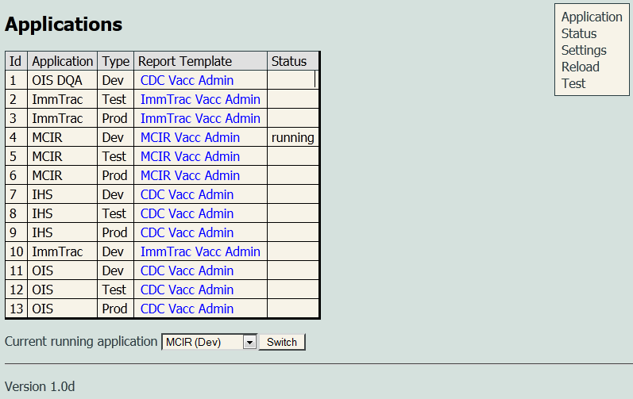
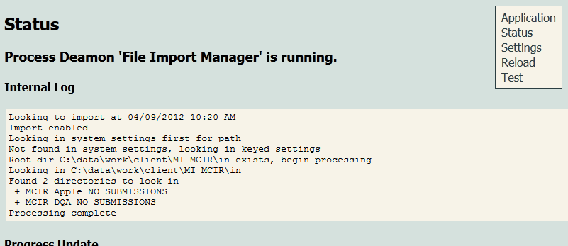
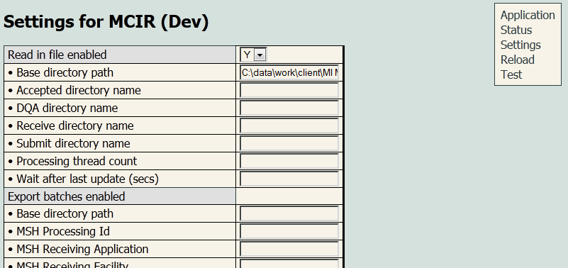
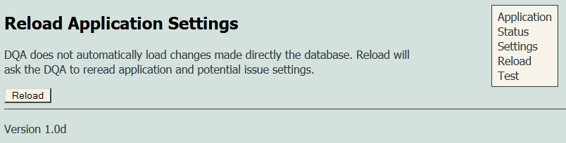
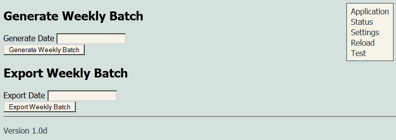

Configuration
The admin configuration user interface is accessible at
/config
from the root of the running DQA. The username and password for entry are defined in the DQA_USER_ACCOUNT table and should have been setup when
the DQA was installed. After logging in, you should see somethink like this:
Applications
This main page lists all the applications the DQA is pre-configured to support. From this point there are three main areas of action that can be taken:
- Menu Use the menu to navigate to a new section.
- Edit Template Select a report template to edit. This is where the XML that defines the DQA report can be set.
- Switch Applications Change the current running application to the appropriate one. This is normally only done once during setup.
Edit Template

Displays the details on the template and allows for setting the report definition that is used on this template. If the template is not correctly formatted an error will be displayed. In order for the DQA report to work properly a valid DQA Report Definition must be entered here.
Status
Lists details of internal threads that process incoming and outgoing data. Use this page to check on the status of the DQA and troubleshoot issues.
Settings
Allows for setting keyed values for the currently selected application. All values left blank will take on their default values.
- Read file enabled: Indicates whether data should be imported from a local directory. This could be a directory that is used as an SFTP
folder for providers to submit data.
- Base directory path: Points to the local directory where the submitter folders are stored. The DQA will assume that any folder placed in this directory represents a new profile for a submitter profile and will automatically create a profile with the same name as the folder and set its status to Test. This field is required in order to read data in. If the folder is not found, data will not be imported and no other action will be taken. All other folder references in this section are based relative to the submitter folder being processed.
- Accepted directory name: This is the folder name where the data that has been accepted and processed should be placed. By default this is assumed to be Accept and if it does not exist will be automatically created.
- DQA directory name: This is the folder where the weekly DQA report will be placed. By default this folder is assumed to be dqa, and if it doesn't exist will be automatically created.
- Receive directory name: This is the folder name where the log file, error report, acknowledgement file, and submission DQA report are placed. These can all be downloaded and inspected by the submitter.
- Submit directory name: This is the folder where data can be placed for processing by the DQA. Once the data is processed the file is moved from this folder to the /receive directory. By default the directory name is /submit and if it does not exist will be automatically created by the DQA. In order to process the file the DQA verifies that the file has not been modified in the last 90 seconds and that the first line starts with FHS or MSH (and if the file starts with FHS it must end with FTS). Otherwise it assumes the file is still being modified or that it does not contain HL7 data.
- Processing thread count: The number of threads that can be created to processing incoming data. Data from different submitters can be processed at the same time, but data from the same provider is processed sequentially. A default value of 5 is assumed.
- Wait after last update (secs): Indicates how long to wait after file has been changed before loading it. This is to protect from slow transmission issues where the DQA could begin and finish processing a file before it had completely transfered. The default for this 90.
- Export batches enabled: Currently this is always enabled but data is only exported if profile is in Production mode.
- Base directory path: The local directory where the batch exports should be placed.
- MSH Processing id: The value that should be placed in the HL7 header.
- MSH Receiving Application: The value that should be placed in the HL7 header.
- MSH Receiving Facility: The value that should be placed in the HL7 header.
- MSH Sending Application: The value that should be placed in the HL7 header.
- MSH Version Id: The value that should be placed in the HL7 header.
- Validate header
- Sending facility max length: Set the maximum expected length for the value in MSH-4.
- Sending facility min length: Set the minimum expected length for the value in MSH-4.
- Sending facility is numeric: Set the if the value in MSH-4 is expected to be numeric.
- Sending facility is PFS: Set if the value in MSH-4 should be a valid ImmTrac PFS number. This triggers an algorithm that checks for the codes internal consistency, but does not verify if this is a currently assigned PFS.
- Validate vaccination
- Vaccination max length: Set the maximum expected length for the value in MSH-4.
- Vaccination min length: Set the minimum expected length for the value in MSH-4.
- Vaccination is numeric: Set the if the value in MSH-4 is expected to be numeric.
- Vaccination is PFS: Set if the value in MSH-4 should be a valid ImmTrac PFS number. This triggers an algorithm that checks for the codes internal consistency, but does not verify if this is a currently assigned PFS.
- Weekly batch
- Batch day (1=Sunday): The day of the week when the regular weekly batch should be generated.
- Batch after (HH:MM): The time of day when the batch process can start.
- Batch before (HH:MM): The time of day after which the batch process should not start.
- Weekly export
- Export day for highest priority (2=Monday): Indicates which day of the week the data should be exported on based on the submitter profile priority setting.
- Export day for high priority (2=Monday) Indicates which day of the week the data should be exported on based on the submitter profile priority setting.
- Export day for normal priority (2=Monday) Indicates which day of the week the data should be exported on based on the submitter profile priority setting.
- Export day for low priority (2=Monday) Indicates which day of the week the data should be exported on based on the submitter profile priority setting.
- Export day for lowest priority (2=Monday) Indicates which day of the week the data should be exported on based on the submitter profile priority setting.
- Export time after (HH:MM): The time of day after which the weekly export should be started.
- Export time before (HH:MM): The time of day after which the weekly export should not be started.
Reload
If data is changed on the database, the DQA is not automatically aware of that. Clicking reload will refresh cached values.
Test
Allows for testing the weekly batch process and weekly export process. This is to facility quality testing and verification that the process works. Simply put a date in either of these boxes that is in the future and the weekly batch process will be started as if it were that day.